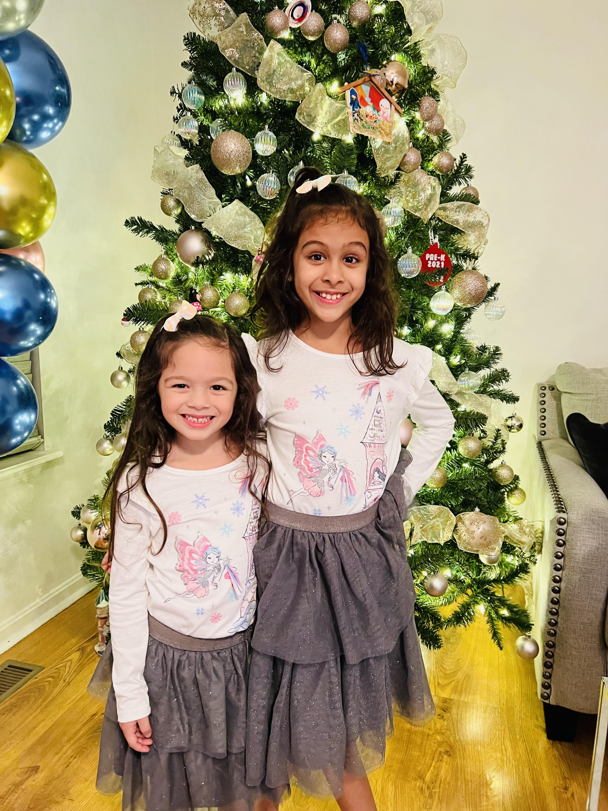

Te amo con todo mi corazon
Te amo con todo mi corazonIn this assignment, I will talk about my journey so far in this world.
I was born in Venezuela on August 4th 1987 at am in Maracaibo.
I did my primary up to my high school in a Catholic School. After I finished High School, I went to study Law. I spend five years learning about Venezuelan Law. When I finished with my degree, I went to work for a bank and then in the private practice.
In November 2012 after all the political instability in Venezuela, I fled the country and applied for political asylum in the USA. After starting from the bottom (washing dishes, construction, etc.) I was able to obtain my green card. I was able to go back to school at Bellarmine University, where I received an MBA.
, Te amo con todo mi corazon
,
I am learning how to play golf and also, I love to read books and travel